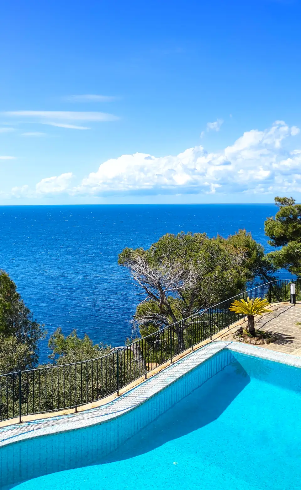
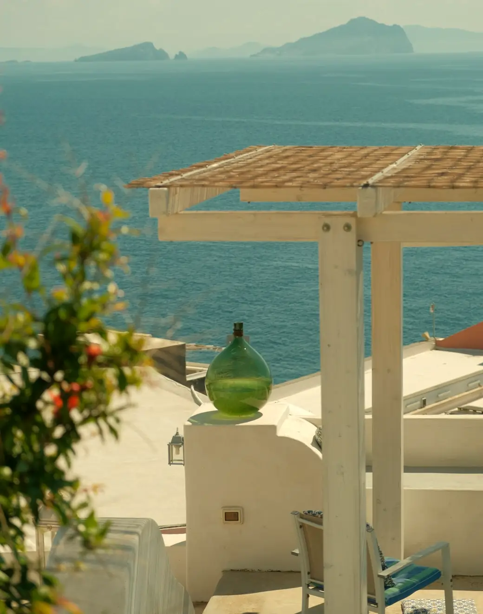

Holding Company
Sets the strategic direction and governance of the Group.
DORR — Hospitality Groupدُر
The shell protects. The pearl shines. DORR brings every brand into one clear structure while preserving the individuality of each.
Discover the structure

01 — Introduction
As the Group continues to expand its portfolio of hospitality concepts, the need for a clear organizational structure and an integrated operating model has become increasingly important. The Group currently manages multiple businesses with distinct identities and operational requirements, while sharing a common vision for growth, excellence, and long-term sustainability.
Through the creation of a dedicated Services Company operating under the guidance of the Holding Company, the Group is able to leverage shared expertise while preserving the individuality and entrepreneurial spirit of each brand. The structure is designed to centralize specialized services, improve operational efficiency, enhance collaboration between entities, and establish a scalable foundation for future expansion.
02 — Nacre layers
Sets the strategic direction and governance of the Group.
Eight departments of specialized services, shared across every brand.
DADA Restaurant, SAYAH Beachclub, DÉJÀ VU, M04 and RANDEZVOU — each with its own character.
Holding
Company
03 — What the shell is for

Clear oversight across every entity.

Shared expertise, used where it adds most.

A structure that supports new ideas.

The same standard, everywhere.
The shell protects.

04 — The Portfolio


05 — Services Company
The Group is able to leverage shared expertise while preserving the individuality and entrepreneurial spirit of each brand.


06 — Future Vision

The organizational structure has been designed to support both the current portfolio of businesses and future growth opportunities. As the organization expands, new hospitality concepts, restaurant brands, and complementary ventures can be integrated efficiently within a unified governance framework.
Through centralized expertise, disciplined oversight, and shared resources, the Group seeks to build a resilient and scalable organization capable of adapting to evolving market conditions while maintaining consistent standards across its portfolio.
As the platform matures, the Group may evaluate opportunities to extend selected capabilities beyond its internal portfolio, where such initiatives align with its long-term vision and create additional shareholder value.
Ultimately, the vision is a diversified ecosystem of hospitality brands operating under a unified strategic direction, while preserving the distinctive identity and character of each concept.